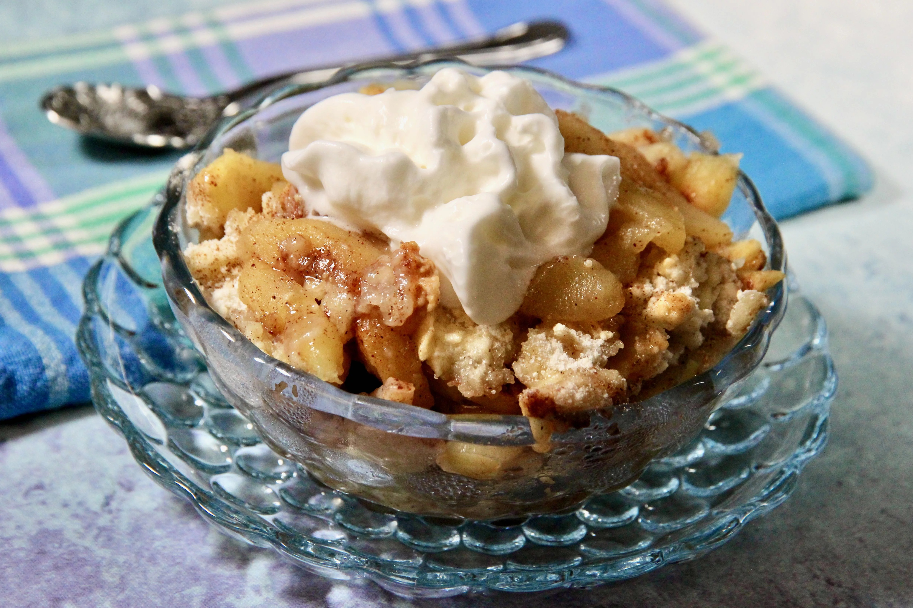

Easy Apple Cobbler
- 6 large Granny Smith apples - peeled, cored and sliced
- 3 tablespoons white sugar
- 1 teaspoon ground cinnamon
- 1 cup all-purpose flour
- 1 cup white sugar
- 1 large egg
- 1 teaspoon baking powder
- ¼ cup water
Directions
Step 1
Preheat the oven to 350 degrees F (175 degrees C). Combine 3 tablespoons sugar and cinnamon in a bowl.
Step 2
Layer apples in an ungreased 9x13-inch baking pan, sprinkling each layer with cinnamon-sugar.
Step 3
Combine flour, 1 cup sugar, egg, and baking powder with a fork. Sprinkle over apples. Lightly sprinkle water over top.
Step 4
Bake in the preheated oven until topping is golden brown, about 30 minutes.